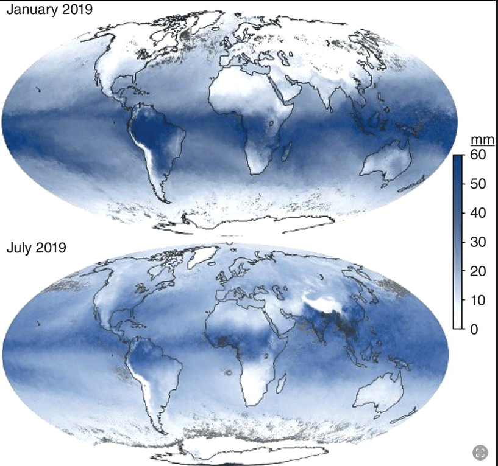
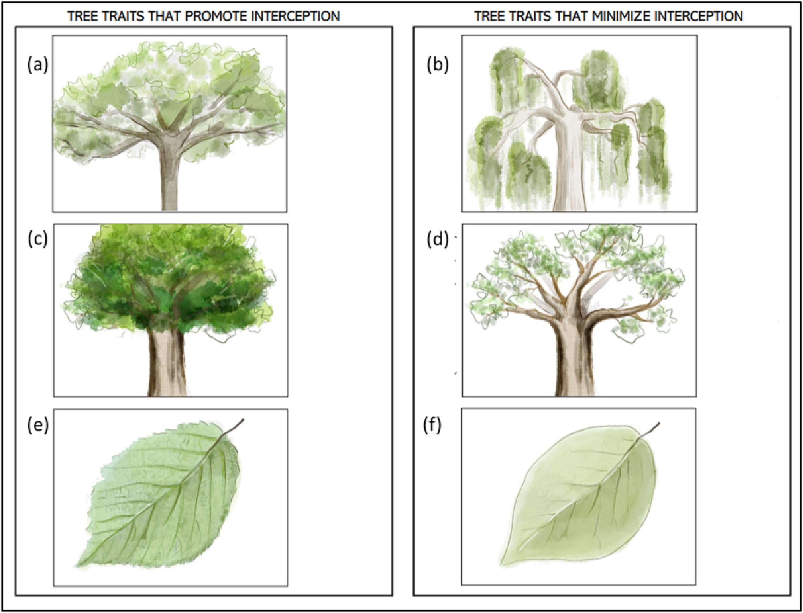

Sustainable Forest Environment (SFE)
Lecture 7: Hydrological and Nutrient Cycles(Last update: 16 May 2025)
Learning Objectives
- Hydrological cycle (water cycle)
- Carbon cycle
- Nitrogen cycle
Water/Hydrological Cycle

Hydrological cycle Source: https://www.alevelgeography.com/drainage-basin-hydrological-system/
Water/Hydrological Cycle
- Water does not come into or leave planet Earth. Water is continuously transformed between the atmosphere and the oceans. This is known as the global hydrological cycle.
- In hydrological cycle water leaves the atmosphere and falls to earth as precipitation where it enters surface waters or infiltrates into the soil surface, or further percolates through the soil layer to underlying ground water and eventually is taken back into the atmosphere by transpiration and evaporation to begin the cycle again.
- There are three main components within hydrological cycle:
- Precipitation
- Runoff
- Evapotranspiration
Precipitation
- Precipitation is the process of water falling from the atmosphere to the earth’s surface in the form of rain, snow, sleet, or hail.
- The atmosphere holds an average of just 18-19 mm of water vapour (yet this small concentration of water molecules provides enough greenhouse effect to keep the earth warm).
- About 2.7 mm of rain falls from the sky every day, matched by an equivalent evaporation that restocks the atmosphere.
- The entire water content of the planet’s atmosphere recycles every 10 days.

Runoff
- Runoff contains all the water that flows over or inside the land surface and eventually reaches the water bodies.
- Runoff contains surface runoff and subsurface runoff.
- As shown in the figure, the surface runoff is the part reaching the drainage basin directly from the land surface.
- Subsurface runoff is the sum of interflow and groundwater flow.
- Interflow indicates water moving through the soil surface, and then moves laterally through the upper soil horizons.
Interception
- When water falls from the sky, it may be intercepted by the surface of canopies
- Interception refers to the portion of precipitation that is captured and retained by the surfaces of vegetation—such as leaves, branches, and stems—before it reaches the ground.
- The quickest way for water to leave a forest is to evaporate from the surfaces of canopies before ever reaching the soil.
- The evaporation from the outside surfaces of canopies is termed canopy interception loss, or simply interception.
Interception
Note
Forest canopies contains several layers of leaf surfaces, which means water falling onto a canopy is likely to stay in the canopy, until so much water has fallen that leaf surfaces are fully wetted and any excess has to fall off.
Note
Typically about 5-15% of the total precipitation falling onto forest canopies is lost back to the atmosphere as interception loss.
Precipitation falls mostly on canopies in forests, and high surface areas can result in enough water sitting long enough on surfaces
Interception
- The intercepted water either evaporates back into the atmosphere or drips to the ground later as throughfall or stemflow.
Troughfall
A small fraction of the intercepted water reaches the ground by falling through gaps in the canopies, which is called throughfall.
Stemflow
Another small fraction of precipitation flows down the stems of trees, which is called stemflow. The amount of water added to the soil in stemflow is a small percentage of total precipitation, but this can still be a large amount of extra water in the local vicinity of the stems.
Evaporation of intercepted water
- Evaporation refers to the loss of water intercepted on the leaf surface to vapour state. Hence, it is also called wet leaf evaporation.
- Forests and grasslands have similar transpiration rates, but evaporation loss is much more in forests.
- Evaporation loss depend upon several factors including canopy structure and climatic conditions of the forest site.
Interception losses are governed by three primary factors
- Evaporation from the wet canopy surface before water can drip down or run off
- Storage of precipitation over the canopy surface, which is later evaporated
- Reduction in throughfall due to canopy cover
Driving factors for evaporation
- Solar radiation: This is the primary energy source for evaporation
- Temporature: As temperature of forest site increases the vapor pressure deficit increases and thus the rate of evaporation increases.
- Humidity: As the humidity of the forest site increases, the vapor pressure deficit decreases and thus the rate of evaporation decreases.
- Wind: Wind increases the rate of evaporation by removing the saturated air layer around the leaf surface and replacing it with drier air.
Note
Evaporation contributes directly to the atmospheric moisture from water surfaces and soils, influencing cloud formation and precipitation.
Effect of Canopy on interception loss
Note
Although, the underlying physical processes, atmospheric conditions, and canopy characteristics that affect interception are poorly understood, we can still use the following generalizations to understand the effect of canopy on interception loss.
| Canopy Characteristic | Effect on Interception Loss |
|---|---|
| Leaf Area Index (LAI) | A higher LAI implies a greater surface area for water to be intercepted and retained, thereby increasing interception loss. |
| Canopy Density and Closure | Denser canopies with full closure intercept more rainfall before it reaches the ground. |
| Leaf Morphology | Broad, rough, and hairy leaves retain more water than smooth, narrow leaves. |
| Canopy Height and Layering | Multi-layered or taller canopies can intercept rainfall more effectively and prolong storage time, enhancing losses. |
| Surface Wettability | Waxy or water-repellent leaves reduce storage capacity and may increase drainage (reducing loss). |
LAI the aboveground leaf area per unit ground area.
Effect of Canopy on interception loss
Physical characteristics of urban trees that impact precipitation retention and drainage by the canopy. (a) High crown projection area, (b) downward sloping branches, (c) high canopy density, (d) low canopy density, (e) high foliar surface roughness, (f) low foliar surface roughness. (Technical illustration by Janice E. Hudson.)
Surface and subsurface flow
Infiltration rate and water holding capacity
- When water reaches to the ground, a part of it is absorbed by the soils and a part of it flows inside (as well as over the soil) to other regions.
- The rate at which water enters the soil is called infiltration rate.
- The absorbtion of water by soil is related to the water holding capacity of the soil.
- When the input of water exceeds the water holding capacity of the soil, the excess water flow over the other regions as surface and subsurface runoff.
- Clays and organic matter have a high water holding capacity, while sandy soils have a low water holding capacity.
- The flow of water through clay is very slow compare to the sandy soils.
- The soils of almost all forests begin with an organic layer (O horizon).
- The O horizons can almost always absorb water faster than it can fall in precipitation. Therefore, the infiltration capacity of the O horizon is very high.
Surface and subsurface flow
- The infiltration rate of the O horizon is very high (high water holding capacity), but the infiltration rate of the A horizon (mineral soils) is much lower.
- Therefore, intense rainfall rarely exceeds the infilteration capacity of soils with O horizons.
- In other case, O horizons are absent, and intense rainfall can exceed the infiltration capacity of mineral soils leading to overland flow.
- For example, due to forest fire, the O horizon is destroyed. In this case, if there is intense rainfall (after a forest fire), then due to surface runoff, there will be a lot of soil erosion. The soil will be washed away taking away the nutrients and minerals with it.
What happens to water after it enters the soil?
- Once water has entered the soil, it less likely to evaporate back into the atmosphere. This is because the O horizon has strong affinity for water and it holds water tightly.
- After the storm, the surface of the O horizon dries out quickly, and very little water moves upward from the moist mineral soil (from A horizon). This is because the O horizon has a high water holding capacity and poor heat conductivity of the O horizon.
- Most water that enters forest soils leaves through the continuum of mycorrhizal fungi (which are symbiotic with tree roots), roots, stems, branches, and leaves into the atmosphere.
Transpiration
- Transpiration: Process of water movement through a plant out into the atmosphere from aerial parts, such as leaves, stems and flowers.
- As water loss happens even in the absence of rainfall, transpiration is also called dry leaf evaporation.
- Controlled by opening and closing of stomata in response to wet or drought like conditions.
- Conifers are very good at closing their stomata and thus are very efficient in conserving water.
Driving factors for transpiration
- Solar radiation: Influences stomatal opening
- Temperature: Affects enzymatic activities in plants
- Humidity: High humidity reduces transpiration
- Wind: Facilitates vapor diffusion from leaf surfaces
Note
Transpiration is essential in connecting soil water content to atmospheric moisure.
Role of forests in hydrological cycles
Regulate flow of water to streams, rivers, lakes
- It can increase the flow of groundwater in dry cold climatic areas through a process called fog-capture. Droplets of fog form on tree leaves and fall to the ground seeping to the ground water table.
- It can decrease the flow of surface and groundwater in wet areas throoough interception and evaporation of rainfall.
Alteration of weather conditions
- In the Amazon rainforest, the amount of rainfall is almost twice as much as the amount of water vapour that moves in from the oceans. The extra water comes from evapotanspiration indicating that evapotranspiration by forest can change local climatic conditions.
Soil erosion
- Rainfall interception by forest leads to less soil erosion, prevention of floods, storm water control.
Role of forests in hydrological cycles
- Further reading: The role of trees in urban stormwater management: https://www.sciencedirect.com/science/article/abs/pii/S0169204617300464
- Towards optimized runoff reduction by urban tree cover: A review of key physical tree traits, site conditions, and management strategies https://www.sciencedirect.com/science/article/pii/S0169204623001688
Nutrient Cycles
Biogeochemistry
- Geochemistry is the study of the distribution and cycling of chemical elements in Earth’s crust and Interior
- Investigates the compositions and behavior of elements/ compounds in rocks, minerals, soil, water, and the atmosphere.
- Biogeochemistry adds on a biological components to this.
Note
Biogeochemistry is the study of interactions between the - Biosphere (life) - Atmosphere (air), - Hydrosphere (water) - Geosphere (rocks and soils)
Biogeochemical cycle
Biogeochemical cycles transfer essential elements between Earth’s
- Biosphere
- Atmosphere
- Hydrosphere
- Geosphere
- Cryosphere
Biogeochemical cycles maintain global nutrient balance and sustain life on Earth.
CHNOPS
- Carbon
- Hydrogen
- Nitrogen
- Oxygen
- Phosphorus
- Sulfur
Note
CHNOPS, six elements are the most abundant elements in living organisms. They are essential elements for life on Earth.
Note
There are other elements which are also needed to sustain life on the Earth, but these elements are not needed in GREAT quantities. Examples include Fe, Mn, and trace metals.
Carbon Cycle
Driving factors of carbon cycle:
- Photosynthesis: Conversion of CO2 and water into glucose and oxygen using sunlight (Storage of C in plants).
- Respiration: Conversion of glucose and oxygen into CO2 and water, releasing energy (Release of C from plants).
Note
When Photosynthesis is GREATER than Respiration: Carbon getes stored in the plant, plant grows and size increases
Note
When Photosynthesis is SMALLER than Respiration: Carbon is removed from plant, plant size decreases
Gross vs Net Photosynthesis
- Gross Photosynthesis: Total amount of C plant assimilates from the atmosphere.
- Net Photosynthesis: Balance between total amount of Carbon fixed during photosynthesis and the Carbon lost during respiration.
C storage in soil
- Plnat take up CO2 and convert it to organuc C, making up their biomass.
- But storage of C in plants is temporary; When plants die, much of their organic C is converted back to CO2.
- Soil stores the organic C on long term basis.
- Soil microbes break down dead plant matter into more resistant organic molecules. These more robust organic molecules make up the humus layer (O horizon) of the soil.

Kyoto University | Sustainable Forest Environment (SFE)